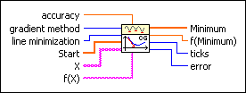
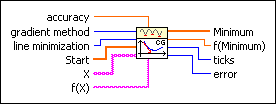
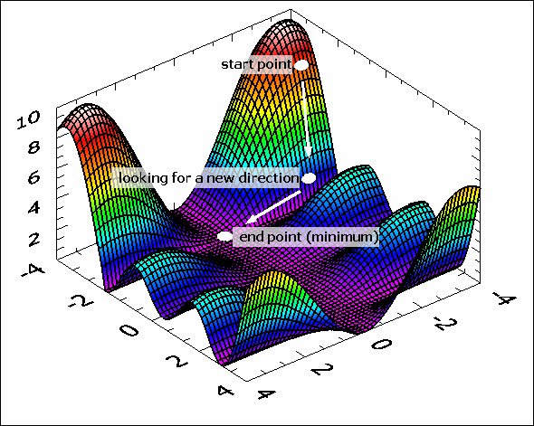

Conjugate Gradient nD VI
Owning Palette: Optimization VIs
Requires: Full Development System
Determines a local minimum of a function of n independent variables with the Conjugate Gradient method.

 Add to the block diagram Add to the block diagram |
 Find on the palette Find on the palette |
Owning Palette: Optimization VIs
Requires: Full Development System
Determines a local minimum of a function of n independent variables with the Conjugate Gradient method.

| Add to the block diagram |
Find on the palette |
 |
accuracy controls the accuracy of the minimum. The method stops if two consecutive approximations differ no more than the value of accuracy. The default is 1.00E-8. |
 |
gradient method specifies the algorithm used to compute the derivatives. A value of 0 represents the Fletcher Reeves method. A value of 1 represents the Polak Ribiere method. The default is 0. |
|
line minimization A value of 0 represents an algorithm without usage of the derivatives. A value of 1 represents an algorithm with usage of the derivatives. The default is 0. |
 |
Start is a point in n dimension at which the optimization process starts. |
 |
X is an array of strings representing the x variables. If the array of strings contains the variable t, the VI returns an error. |
 |
f(X) is the string representing the function of the x variables. The formula can contain any number of valid variables. |
 |
Minimum is the determined local minimum in n dimension. |
 |
f(Minimum) is the function value of f(X) at the determined minimum. |
 |
ticks is the time in milliseconds for the whole calculation. |
 |
error returns any error or warning from the VI. You can wire error to the Error Cluster From Error Code VI to convert the error code or warning into an error cluster. |
The Fletcher Reeves and the Polak Ribiere algorithm is based on the determination of best-suited directions and 1D sub-minimization.
The following illustration shows a start point and a start direction. New points and new directions are calculated by the Conjugate Gradient nD VI.
